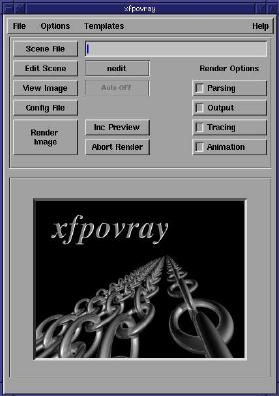
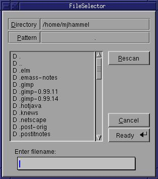
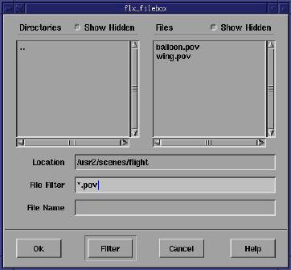
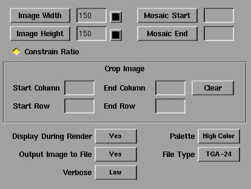
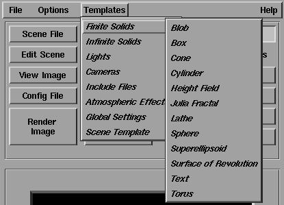
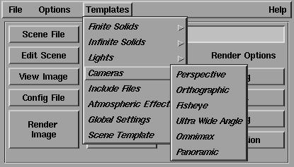

More...

More... |
| © 1998 Michael J. Hammel |
 |
After the fonts were created I needed to run POV-Ray. This is a terrific command line tool for creating 3D images that uses its own language for defining a 3D scene. The scene file is fed to the rendering engine using any combination of the many command line options. The only real problem with POV-Ray is that is has so many options it is easy to forget which ones use which particular syntax.
Fortunately, Robert S. Mallozzi
has written a very useful XForms based front end to the POV-Ray renderer:
XFPovray.
The tool, like many for Linux, is available in source. It requires
the XForms v0.88 or later
library and will work with POV-Ray 3.0.
I had been running the 1.2.4 version for the work on the cover art, but
while writing this article I found that Robert had released a newer version.
I downloaded that one and had no problems building it. Its just a
matter of editing 2 files (if necessary), and running xmkf; make; make
install. You'll need to be root to run the default install, since
the Imakefile is set up to install in /usr/local/bin.
|
 | |||
| Figure 2: XFPovray 1.2.4 interface |
Once you've selected an editor you are ready to edit a file. Click
on the Scene File button to open a dialog box. This button sets the
default scene file to be rendered. You should do this first before
trying to edit any of your include files. The dialog box that opens
is a file selection box. This dialog has changed in the 1.3.1 version
to a format that is a little more standard for such dialogs. Figures
3 and 4 show the two versions of the file selection dialog.
|  |  |
| Figure 3: File Selection box for XFPovray 1.2.4 | Figure 4: File Selection box for XFPovray 1.3.1 |
The Scene File button only establishes the file which will be passed to the renderer. It does't open the editor on that file. To open the editor you next choose the Edit Scene button. Again, the File Selection window opens. In the 1.3.1 version the default file in this dialog is the file you chose with the Scene File button. In the 1.2.4 version you start in whatever directory you started XFPovray in originally. You can edit a file by clicking on it or use the dialog to choose another file. Once you've selected a file the editor will open into that file and your ready to do your work.
The View Image button will simply launch an image viewer on a particular image file. The Config File button will display the configuration file used for POV-Ray (not for XFPovray). The settings for many of these can be changed from Render Options (buttons in 1.2.4, a notebook with tabs in 1.3.1), although there doesn't appear to be a way to save the changes from the interface. If the defaults are not to your liking, you can always edit the configuration file (xfpovray.ini) by hand.
The rendering options cover a large number of POV-Ray options, but a
few options are not yet supported (see the web page for details on what
isn't supported). Figures 5 and 6 show the Rendering Options windows
for the two versions of XFPovray. Figure 6 was cropped from the main
window to save a little space. The render options in version 1.2.4
are displayed in the space occcupied by the povray banner image.
Figure 7 shows the tabs in the Render Options window for version 1.3.1.
As you can see, there are quite a few options you can configure from these
windows. Keep in mind that version 1.2.4 has the most of the same
options as 1.3.1, except with 1.2.4 you access them from a set of Render
Options buttons in the main window.
|  |
| Figure 5: Render Options, version 1.2.4 |
 |
| Figure 6: Render Options, version 1.3.1 |
Figures 7 and 8 show some of the possible templates you can use when
editing a scene file. Templates are examples of the various primitives
and command syntax you will use in a POV-Ray scene file. To use these
templates, you first select the template you want to add to your scene
file (we're assuming the scene file is already opened and currently being
edited). This copies the template to the primary X selection buffer.
This is the same buffer you use when you highlight some text in an xterm
window. To use the copy of the template you first enter insert mode
in your editor and then use the middle mouse button (or both buttons on
a 2 button mouse that is emulating a 3 button mouse) to paste the selection
into your file. Note that when you select the template from the menus
you won't see any sort of confirmation that the template has been placed
in the selection buffer.
|  |
| Figure 7: The solid primitive templates |
|  |
| Figure 8: Camera primitve templates |
Once you've finished editing the file you can render a preview of the image. Use the Render Options/Output feature to specify the size of the preview. You can even use the Inc Preview button to sample the effects provided by the standard include files! The preview uses the selected texture, color, or whatever on a sphere. You can specify the direction of lights and the camera position for the preview as well. This makes selecting the features to add to an objects texture much simpler and less error prone. Although there is still a bit of trial an error involved with creating the textures, you can at least sample some of the effects quickly and easily.
One last thing you should know before trying XFPovray. I mentioned earlier that I tried both the 1.2.4 and 1.3.1 versions. If you run the earlier version first, then upgrade to the 1.3.1 version the program seems to recognize the differences in the configuration files. However, if you have problems with 1.3.1 and want to fall back to 1.2.4 you will need to first clean out the files in the $HOME/.xfpovray directory. The earlier version will get confused by the changes to the config files that 1.3.1 uses. Its not a real concern, of course, if you don't try to back track to from the later to the earlier version.
All in all, XFPovray is quite a useful tool. When I was working
on my 3D text I first generated the include files of the text using Font3D/XFont3D.
After that, I was able to work completely from within XFPovray to sample
the images and experiment with minor changes quickly. I never had
to run the POV-Ray executable by hand, which was a real bonus since I never
can remember the correct command line options. If you do much work
with POV-Ray, I think you'll enjoy using XFPovray as your editing/rendering
front end.
|
| © 1998 by Michael J. Hammel |